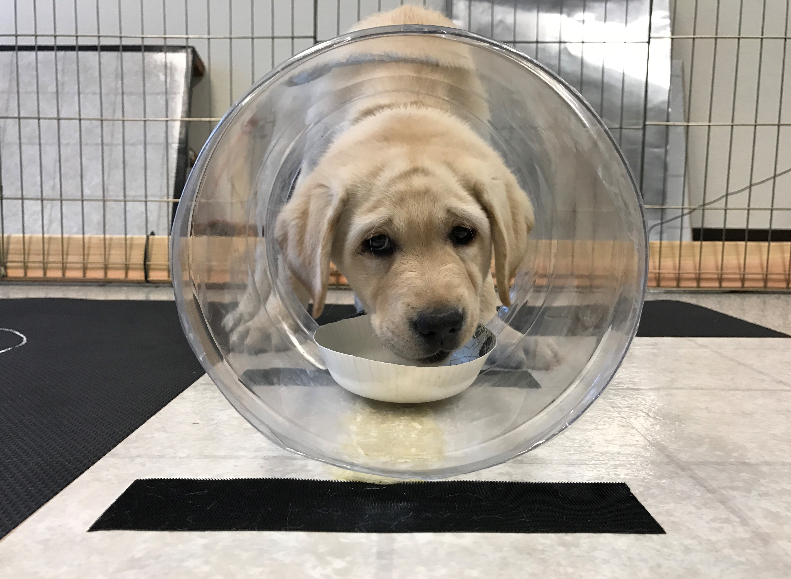

Psychology Today
What can we learn from a monkey water park?
Coverage of Arre, A.M.* & Horschler, D.J.* (2021). Swimming and diving as social play in juvenile rhesus macaques (Macaca mulatta). Behaviour.
Postdoctoral Fellow
Yale University
Computational Social Cognition Lab, New Haven, CT (2021 – Present)
Electronic versions of the articles listed below are provided to ensure timely dissemination of scholarly work. These files may not be reposted or shared without permission by the respective copyright holders and may be downloaded strictly for individual, non-commercial use. Mulligan, N.W., Susser, J.A., & Horschler, D.J. (In revision). Action memory and metamemory. Journal of Experimental Psychology: Learning, Memory, and Cognition. 24) Bray, E.E., Gnanadesikan, G.E., Horschler, D.J., Levy, K.M., Kennedy, B.S., Famula, T.R., & MacLean, E.M. (2021). Development and heritability of cognitive traits in Canine Companions dogs. Talk presented at the International Working Dog Conference (Virtual meeting). University of Arizona, HNRS 395H: Spiritual and Scientific Approaches to Consciousness (2021) What can we learn from a monkey water park? These adorable puppies may help explain why dogs understand our body language Puppies are born ready to communicate with humans Wolves raised by humans can’t understand people like dogs can Puppies 'get' us more than human-raised wolf puppies do, study finds Big dogs may be smarter than small dogs, according to a new study, but only in tests of memory and self-control Are bigger dogs with bigger brains smarter? Centuries of breeding have reshaped dog brains—here’s how As humans shaped dogs’ bodies, we also altered their brains Humans haven’t just changed what dogs look like—we’ve altered the very structure of their brains NSCS 200: Fundamentals of Neuroscience and Cognitive Science (Spring 2020)
Mailing Address I am a Postdoctoral Fellow in the Department of Psychology at Yale University, working with Dr. Laurie Santos and Dr. Julian Jara-Ettinger. I graduated from the University of North Carolina at Chapel Hill in 2016 with a B.S. in Psychology, and I received an M.A. (2018) and Ph.D. (2021) in Anthropology from the University of Arizona under the direction of Dr. Evan MacLean. I have previously worked as a Graduate Teaching Associate in both the School of Anthropology and the School of Mind, Brain and Behavior at the University of Arizona.
I am a Postdoctoral Fellow in the Department of Psychology at Yale University, working with Dr. Laurie Santos and Dr. Julian Jara-Ettinger. I graduated from the University of North Carolina at Chapel Hill in 2016 with a B.S. in Psychology, and I received an M.A. (2018) and Ph.D. (2021) in Anthropology from the University of Arizona under the direction of Dr. Evan MacLean. I have previously worked as a Graduate Teaching Associate in both the School of Anthropology and the School of Mind, Brain and Behavior at the University of Arizona.
My research interests broadly center on cognitive evolution, with a particular emphasis on social-cognitive abilities such as theory of mind, shared intentionality, and cooperative communication. For example, how do humans represent the mental states of others, and how do we use these representations to guide our goal-directed actions? Do other animals represent others' mental states in the same ways? Is our ability to form joint commitments unique, or do other animals also understand and share others' intentions? I investigate these and related questions by integrating non-invasive cognitive, behavioral, and biological research in humans, dogs, wolves, and free-ranging non-human primates.
My current research is funded by a Social, Behavioral and Economic Sciences Postdoctoral Research Fellowship from the National Science Foundation. This award supports my work jointly with the Comparative Cognition Lab and Computational Social Cognition Lab to build and evaluate computational models of non-human primate theory of mind. By blending computational and comparative approaches, I aim to advance our fundamental understanding of the cognitive mechanisms that guide social behavior.

Research Experience
Comparative Cognition Lab, New Haven, CT (2021 – Present)
Canine Cognition Center at Yale, New Haven, CT (2015; 2021 – Present)
Cayo Santiago Biological Field Station, Punta Santiago, Puerto Rico (2016 – Present)
Canine Companions for Independence, Santa Rosa, CA & Oceanside, CA (2016 – Present)
Derby City Agility Association, Louisville, KY (2021 – Present)
Humane Society of Southern Arizona, Tucson, AZ (2018 – 2021)
Arizona Canine Cognition Center, Tucson, AZ (2016 – 2021)
Wildlife Science Center, Stacy, MN (2018)
Human Memory Lab, Chapel Hill, NC (2015 – 2016)
Lenovo User Experience Research Team, Morrisville, NC (2014 – 2016)
Somatosensory Research Lab, Chapel Hill, NC (2013 – 2014)

Peer-Reviewed Publications
13) Horschler, D.J., Bray, E.E., Gnanadesikan, G.E., Byrne, M., Levy, K.M., Kennedy, B.S., & MacLean, E.L. (2022). Dogs re-engage human partners when joint social play is interrupted: A behavioural signature of shared intentionality? Animal Behaviour, 183, 159-168. [PDF]
12) ManyDogs Project, Espinosa, J., Bray, E.E., Buchsbaum, D., Byosiere, S.E., Byrne, M., Freeman, M.S., Gnanadesikan, G.E., Alexandrina Guran, C.-N., Horschler, D.J., Huber, L., Johnston, A.M., MacLean, E.L., Pelgrim, M.H., Santos, L., Silver, Z.A., Stevens, J.R., Völter, C.J., & Zipperling, L. (Accepted registered report). ManyDogs 1: A multi-lab replication study of dogs’ pointing comprehension. Animal Behavior and Cognition. [Preprint]
11) Bray, E.E., Gnanadesikan, G.E., Horschler, D.J., Levy, K.M., Kennedy, B.S., Famula, T.R., & MacLean, E.L. (2021). Early-emerging and highly heritable sensitivity to human communication in dogs. Current Biology, 31(14), 3137-3144. [PDF]
☨ Featured on the issue’s cover
10) Salomons, H., Smith, K.C.M., Callahan-Beckel, M., Callahan, M., Levy, K., Kennedy, B.S., Bray, E.E., Gnanadesikan, G.E., Horschler, D.J., Gruen, M., Tan, J., White, P., vonHoldt, B.M., MacLean, E.L., & Hare, B. (2021). Cooperative communication with humans evolved to emerge early in domestic dogs. Current Biology, 31(14), 3132-3136. [PDF]
9) Horschler, D.J., Santos, L.R., & MacLean, E.L. (2021). How do non-human primates represent others’ awareness of where objects are hidden? Cognition, 212, 104658. [PDF]
8) Arre, A.M.* & Horschler, D.J.* (2021). Swimming and diving as social play in juvenile rhesus macaques (Macaca mulatta). Behaviour, 158(6), 529-546. [*Denotes equal contribution] [PDF]
7) Bray, E.E., Gruen, M.E., Gnanadesikan, G.E., Horschler, D.J., Levy, K.M., Kennedy, B.S., Hare, B.A., & MacLean, E.L. (2020). Dog cognitive development: A longitudinal study across the first two years of life. Animal Cognition, 24(2), 311-328. [PDF]
6) Horschler, D.J., MacLean, E.L., & Santos, L.R. (2020). Advancing gaze-based research on primate theory of mind. Trends in Cognitive Sciences, 24(10), 778-779. [PDF]
5) Bray, E.E., Gruen, M.E., Gnanadesikan, G.E., Horschler, D.J., Levy, K.M., Kennedy, B.S., Hare, B.A., & MacLean, E.L. (2020). Cognitive characteristics of 8-to-10-week-old assistance dog puppies. Animal Behaviour, 66, 193-206. [PDF]
4) Horschler, D.J., MacLean, E.L., & Santos, L.R. (2020). Do non-human primates really represent others’ beliefs? Trends in Cognitive Sciences, 24(8), 594-605.
[PDF]
3) Horschler, D.J. & MacLean, E.L. (2019). Leveraging brain-body scaling relationships for comparative studies. Animal Cognition, 22(6), 1197-1202.
[PDF]
2) Horschler, D.J., Santos, L.R., & MacLean, E.L. (2019). Do non-human primates really represent others' ignorance? A test of the awareness relations hypothesis. Cognition, 190, 72-80.
[PDF]
1) Horschler, D.J., Hare, B., Call, J., Kaminski, J., Miklósi, Á., & MacLean, E.L. (2019). Absolute brain size predicts dog breed differences in executive function. Animal Cognition, 22(2), 187-198.
[PDF]
☨ Selected as the issue’s highlight articleSubmitted Manuscripts

Conference Presentations
23) Horschler, D.J., MacLean, E.L., & Santos, L.R. (2021). What do non-human primates represent about others’ knowledge of hidden objects? Talk presented at the Annual Conference of the European Society for Philosophy and Psychology (Virtual meeting).
22) Horschler, D.J., Bray, E.E., & MacLean, E.L. (2021). Interpreting dogs' re-engagement behaviors after disrupted joint activities. Talk presented at the Yale University East Coast Canine Cognition Workshop (Virtual meeting).
21) Horschler, D.J., Bray, E.E., & MacLean, E.L. (2021). Do dogs form joint intentions with humans in social play? Talk presented at the Society for Personality and Social Psychology’s Origins of the Social Mind Preconference (Virtual meeting).
20) Bray, E.E., Gnanadesikan, G.E., Horschler, D.J., & MacLean, E.L. (2021). Heritable variation in dog social cognition. Thread presented at the Animal Behavior Society and Association for the Study of Animal Behaviour Twitter Conference (Virtual meeting).
19) Gnanadesikan, G.E., Espinsoa, J.H., & ManyDogs. (2021). ManyDogs 1: An International Collaborative Approach to Pointing Comprehension in Domestic Dogs. Thread presented at the Animal Behavior Society and Association for the Study of Animal Behaviour Twitter Conference (Virtual meeting).
18) Horschler, D.J., Bray, E.E., & MacLean, E.L. (2020). Do dogs re-engage humans when joint experiences end? Talk presented at the Yale University East Coast Canine Cognition Workshop, New Haven, CT.
17) Bray, E.E., Gnanadesikan, G.E., Horschler, D.J., & MacLean, E.L. (2020). Early development and longitudinal stability of cognitive traits in working dogs. Talk presented at the Yale University East Coast Canine Cognition Workshop, New Haven, CT.
16) MacLean, E.L., Bray, E.E., Gnanadesikan, G.E., & Horschler, D.J. (2020). Associations between individual differences in cognition and training outcomes in assistance dogs. Talk presented at the Yale University East Coast Canine Cognition Workshop, New Haven, CT.
15) Horschler, D.J., Santos, L.R., & MacLean, E.L. (2019). Awareness relations underpin knowledge representation in rhesus monkeys. Talk presented at the UA-ASU Cognitive Science Conclave, Tucson, AZ.
14) Horschler, D.J., Santos, L.R., & MacLean, E.L. (2019). How do non-human primates represent what others know? Talk presented at the 7th Annual Conference of the Southwestern Association of Biological Anthropologists, Tempe, AZ.
☨ Awarded prize for best student podium presentation
13) MacLean, E.L., Bray, E.E., Gnanadesikan, G.E., & Horschler, D.J. (2019). Ontogeny and heritability of cognitive and temperamental traits in an assistance dog population. Talk presented at the International Canine Science Conference, Tempe, AZ.
12) Horschler, D.J., Santos, L.R., & MacLean, E.L. (2019). Do non-human primates really represent others' ignorance? Talk presented at the 26th International Conference on Comparative Cognition, Melbourne Beach, FL.
☨ Selected as a finalist for the Ron Weisman Outstanding Student Presentation Award
11) Bray, E.E., Gnanadesikan, G.E., Horschler, D.J., & MacLean, E.L. (2019). Early emerging cognition in 9-week-old puppies. Talk presented at the 26th International Conference on Comparative Cognition, Melbourne Beach, FL.
10) MacLean, E.L., Bray, E.E., Gnanadesikan, G.E., & Horschler, D.J. (2019). Heritability of cognitive traits in a pedigreed dog population. Talk presented at the 26th International Conference on Comparative Cognition, Melbourne Beach, FL.
9) Gnanadesikan, G.E., Horschler, D.J., & MacLean, E.L. (2019). Social cues and hormonal profiles over development in wolf puppies. Poster presented at the GPSC Student Showcase, Tucson, AZ.
8) Horschler, D.J. & MacLean, E.L. (2018). Absolute brain size predicts dog breed differences in executive function and social cognition. Poster presented at the GPSC Student Showcase, Tucson, AZ.
7) Horschler, D.J. & MacLean, E.L. (2018). Dogs as a model for the cognitive implications of neuroanatomical variation. Talk presented at the Yale University East Coast Canine Cognition Workshop, New Haven, CT.
6) MacLean, E.L. & Horschler, D.J. (2018). Breed differences in dog cognition are predicted by absolute brain volume. Talk presented at the 126th Annual Convention of the American Psychological Association, San Francisco, CA.
5) Horschler, D.J. & MacLean, E.L. (2017). Absolute brain size predicts dog breed differences in executive function and social cognition. Poster presented at the UA-ASU Cognitive Science Conclave, Tucson, AZ.
4) Horschler, D.J. & MacLean, E.L. (2017). Absolute brain size predicts dog breed differences in working memory and social cognition. Poster presented at the North American Canine Science Forum, Tempe, AZ.
3) Horschler, D.J., Susser, J.A., & Mulligan, N.W. (2016). Metamemory for performed and observed actions: Within-subjects. Poster presented at the UNC Psychology and Neuroscience Honors Poster Symposium, Chapel Hill, NC.
2) Horschler, D.J., Susser, J.A., & Mulligan, N.W. (2016). Metamemory for performed and observed actions: Within-subjects. Poster presented at the UNC Celebration of Undergraduate Research, Chapel Hill, NC.
1) Horschler, D.J. (2014). Insights into user experience at Lenovo. Poster presented at the Karen M. Gil Internship Program Poster Symposium, Chapel Hill, NC.Invited Talks
Yale University, PHIL 271: Philosophy of Language (2020)
Boston College, Canine Cognition Center and Social Learning Laboratory (2020)
University of Arizona, AGUA Student Lecture Series (2019)
University of Arizona, Grad Slam Competition (2019)
Yale University, Comparative Cognition Laboratory (2019)
University of North Carolina at Chapel Hill, PSYC 67: The Senses of Animals (2015)

Selected Media Coverage
Psychology Today
Coverage of Arre, A.M.* & Horschler, D.J.* (2021). Swimming and diving as social play in juvenile rhesus macaques (Macaca mulatta). Behaviour.

Science
Coverage of Bray et al. (2021). Early-emerging and highly-heritable sensitivity to human communication in dogs. Current Biology.
Smithsonian Magazine
Coverage of Bray et al. (2021). Early-emerging and highly-heritable sensitivity to human communication in dogs. Current Biology.
Scientific American
Coverage of Salomons et al. (2021). Cooperative communication with humans evolved to emerge early in domestic dogs. Current Biology.
CNN
Coverage of Salomons et al. (2021). Cooperative communication with humans evolved to emerge early in domestic dogs. Current Biology.
Insider
Coverage of Horschler et al. (2019). Absolute brain size predicts dog breed differences in executive function. Animal Cognition.

Sky News
Coverage of Horschler et al. (2019). Absolute brain size predicts dog breed differences in executive function. Animal Cognition.
Commentary on Related Research
National Geographic
Commentary on Hecht et al. (2019). Significant neuroanatomical variation among domestic dog breeds. Journal of Neuroscience.
The Washington Post
Commentary on Hecht et al. (2019). Significant neuroanatomical variation among domestic dog breeds. Journal of Neuroscience.

Science
Commentary on Hecht et al. (2019). Significant neuroanatomical variation among domestic dog breeds. Journal of Neuroscience.

Teaching Experience
University of Arizona | Department of Neuroscience | School of Mind, Brain & Behavior
Graduate Teaching Associate | ~160 students
ANTH 170C2: Animal Minds (Fall 2019)
University of Arizona | School of Anthropology | College of Social and Behavioral Sciences
Graduate Teaching Associate | Two sections (~30 students each)
ANTH 327: Dog Thought (Spring 2019)
University of Arizona | School of Anthropology | College of Social and Behavioral Sciences
Graduate Teaching Associate | ~150 students
NSCS 321: Research Methods in Cognitive Science (Fall 2018)
University of Arizona | Department of Neuroscience | School of Mind, Brain & Behavior
Graduate Teaching Assistant | ~110 students
ANTH 170: Human Variation in the Modern World (Fall 2017 & Spring 2018)
University of Arizona | School of Anthropology | College of Social and Behavioral Sciences
Graduate Teaching Assistant | Two sections per semester (~30 students each)
Contact Information
Yale University
Department of Psychology
Box 208205 [2 Hillhouse Ave]
New Haven, CT 06520-8205
Email Address
daniel.horschler [at] yale.edu
CV:
Download